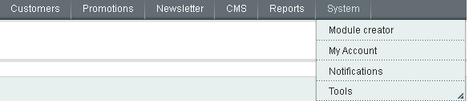

(under construction)
UMC requires Magento CE 1.7. It might work on CE 1.8.0.0-alpha but it hasn't been fully tested yet.
UMC does not work on CE versions lower than 1.7, or does not produce the desired result.
Before installing UMC, make sure the compilation is disabled.
Warning: UMC is for development use. Do not use in UMC in production environments.
You can install UMC directly from Magento Connect.
UMC can be found at this url: http://www.magentocommerce.com/magento-connect/utilities/developer-tools/ultimate-modulecreator-8949.html
The extension key for UMC is http://connect20.magentocommerce.com/community/Ultimate_ModuleCreator
You can also download UMC from github as an archive. Unzip the archive over your Magento instance (app and skin folders over the matching folder). Nothing should be overwritten.
After the install process is done make sure you clear the cache.
If the installation was successful you should see the UMC menu item in the backend under the `System` menu

If you want to uninstall UMC delete the following (paths are relative to Magento root):
| app/code/local/Ultimate/ModuleCreator/ | folder |
| app/design/adminhtml/default/default/layout/ultimate_modulecreator.xml | file |
| app/design/adminhtml/default/default/template/ultimate_modulecreator/ | folder |
| app/etc/modules/Ultimate_ModuleCreator.xml | file |
| app/locale/en_US/Ultimate_ModuleCreator.csv | file |
| skin/adminhtml/default/default/ultimate_modulecreator.css | file |
| LICENSE_UMC.txt | file |
| readme_UMC.txt | file |
To delete any settings from the database run the following query (add table prefix if you have one):
DELETE FROM `core_config_data` where `path` LIKE 'modulecreator/%';After clicking on the 'Module creator' menu you should see an empty grid. This will list the modules you will create with UMC.
Click on 'Create new module' to start your module.
The 'create module screen' should contain 3 tabs. Later might be 4 tabs but initially there are 3.
While going through the tabs I will create a module as a tutorial. It will be a simple blog module with blog posts and tags.
At the end of each tab description below you will find the values needed you need to fill in to make it work.
In the General settings tab you can define the meta-information about your module.
Most of the values are filled with a default value. To see how to change these values visit the Configuration section
| Field name | Description | Has default value |
|---|---|---|
| Namespace | This is not actually a namespace. This is the folder name of your new extension. Your company name should go here. Use only letters and numbers. Start with a capital letter. | Yes |
| Module name |
This is your extension/module name. It should be something meaningful and not very long. Try to use a noun in singular form. Start with a capital letter. For security reasons, to avoid module name collisions with the Magento core you cannot name a module just like an existing one even in a different namespace: "Catalog", "Sales", "Checkout"... |
No |
| Code pool |
The codepool is the folder where your extensnion will be placed. Magento has by deafult 3 codepools: core, local & community. In this dropdown only local and community are available. Always keep the core clean. If the extensnion you create with UMC only for internal use then choose 'local'. If you plan to put it on magento-connect or sell it, select 'community'. |
Yes |
| Action |
UMC allows you to direcly install the module you create on the current Magento instance, or create a zip with it and install it later. Warning:. The zip is not compatible with Magento Connect. It's just a simple archive with the files of the module. If you choose to install the module directly no file will be overwritten. If by a human error or UMC error a file should be overwritten then the 'Action' is changed to 'Create an archive. I will install it later.' and you will be notified of the files that were not overwritten. |
Yes |
| Frontend package |
This is the name of the design interface (package) of your mangento instance. If you don't know what goes here put "base". For more information on what package/interface is, see the Magento User guide |
Yes |
| Frontend theme - templates |
This is the name of the theme of your mangento instance for the template files. If you don't know what goes here put "default". For more information on what a theme is, see the Magento User guide |
Yes |
| Frontend theme - layout |
This is the name of the theme of your mangento instance for the layout files. If you don't know what goes here put "default". For more information on what a theme is, see the Magento User guide |
Yes |
| License |
The text you put here will be added at the top of (almost) each file in the module you create. Use {{Namespace}} as a placeholder for namespace, {{Module}} as a placeholder for the module name and {{Y}} as placeholder for current year. If you don't want any License text on your files just leave this field empty. |
Yes |
| Menu sort order |
The module you create should be accessable in the back-end through a menu item. In this field you should put the sort order for that menu item In case you don't know what to puut there, click on the link below the field and you should see the current menus and be able to fit your menu items between 2 of them or at the start or the end of the menu items. |
No |
For the blog module these values can be:
| Field | Value |
|---|---|
| Namespace | Easylife |
| Module name | Blog |
| Code pool | local |
| Action | Install new extension on the current instance. |
| Frontend package | base |
| Frontend theme - templates | default |
| Frontend theme - layouts | default |
| License | {{Namespace}}_{{Module}} extension Built for demo purposes in {{Y}} |
| Menu sort order | 45 |
This is the section where you can add your custom entities.
You can add as many as you want.
For each entity you can add its properties (table fields).
After clicking on 'Add entity' you should see a form like the image on the left.
Most of the values are filled with a default value. To change these values visit the Configuration section
In an entity configuration the following fields can be configured.
| Field name | Description | Has default value |
|---|---|---|
| Name settings | ||
| Entity label - singular |
Each entity must have a lable used for buttons, links, messages. This is the singular form of the label. For example in a blog module, the post entity will have the label in singular form 'Post' Info:Try to use English words for this label. It's not mandatory, but it makes the taxonomy more readable. UMC will create a language file for the modules it generates and you can translate your module. Info:I recommend the first letter to be uppercase. |
No |
| Entity label - plural |
This is the plural form of the label above. It will be used for lists. (For example: 'Posts') Info:Try to use English words for this label. It's not mandatory, but it makes the taxonomy more readable. UMC will create a language file for the modules it generates and you can translate your module. Info:I recommend the first letter to be uppercase. |
No |
| Entity code - singular |
UMC generates the code in a 'human readable' form. It's easier to figure out what the code is about when the variables and methods have a propper name. For exmaple it's easier to read foreach ($_posts as $_post){...} or $_post->getTags() than foreach ($_list as $_item){...} or $_entity->getRelated('tags'); The value you fill in here will be used for variable names, file names and table names. Info:Use only letters. No numbers, no underscores, all in lowercase. Info:There are some restrictions to these values, because there are reserved strings that might make the code not function properly. For example: 'resource', 'setup'. For a complete list of restrictions see Ultimate_ModuleCreator_Helper_Data::$_restrictedEntityNames |
No |
| Entity code - plural |
This is the plural value of the entity code above. For example 'posts'. Info:Use only letters. No numbers, no underscores, all in lowercase. |
No |
| Admin | ||
| Behaves as tree |
If this is set to 'Yes' then your entity will behave as the default Magento categories to. It will have the same UI as the categories module have. |
Yes |
| Add "Created at" to admin grid |
The entities created with UMC will have a field called 'created_at' field with the creation date of any entity instance. If this is set to 'Yes' the 'Created at' field will be added to the admin grid. WarningThis option is not available if the entity has 'tree' behavior. |
Yes |
| Add "Updated at" to admin grid |
The entities created with UMC will have a field called 'updated_at' field with the date of the last modification for each entity instance. If this is set to 'Yes' the 'Updated at' field will be added to the admin grid. WarningThis option is not available if the entity has 'tree' behavior. |
Yes |
| Add "Status" field |
If this is set to 'Yes' a boolean field called 'status' will be added to your entity. With this field you can controll what entities will appear on frontend. If this is set to 'No' then all the entity instances will be considered enabled. |
Yes |
| Add to admin global search |
The Magento admin Global search (at the top of every admin page) searches for the text you enter in products, customers and orders. If you set this to 'Yes' than it will search in your entity also. |
Yes |
| Create API |
Magento offers a SOAP API for managing products, categories, orders and other entities. If this is set to 'Yes', then your entity will also be available for managing through the SOAP API. It generates the classes and xml files needed for API V1, API V2 and API V2 with WSI complience. |
Yes |
| Frontend | ||
| Create fronend files |
If this is set to 'Yes' then the frontend files of your entity will be created. If this is set to 'No', all the other fields in this section will not be available. |
Yes |
| Create entity list page |
If this is set to 'Yes', a link will be added to the footer to a page where your entity instances will be sisted. The page has a toolbar for pagination, and it will list the titles of the entity instances. |
Yes |
| Entity list page template |
From this dropdown you can select the layout of your entity list page from the available page formats. All the Magento page layouts are listed here: 1column, 2columns-left, .... If you have any other page layout it will appear here. |
Yes |
| Create entity view page |
If this is set to 'Yes', the files needed for the page details of your entity are created. |
Yes |
| Entity view page template |
From this dropdown you can select the layout of your entity view page from the available page formats. All the Magento page layouts are listed here: 1column, 2columns-left, .... If you have any other page layout it will appear here. |
Yes |
| Create URL rewrites for entity view page |
If you set this to 'Yes', a new field will be added to your entity called 'url_key'. This will allow you to use SEF url's for your entity view pages. Example: http://mysite.com/some-key-here.html If is set to 'No' your entity view page will be accessed in the default way http://mysite.com/module/controller/action/id/7 warningThis field is available only if 'Create entity view page' is set to 'Yes'. |
Yes |
| Add SEO attributes |
If this is set to 'Yes', 3 extra fields will be added to your entity, 'meta_title', 'meta_keywords' and 'meta_description'. The values of these fields will be added used for the details page of your entity. warningThis field is available only if 'Create entity view page' is set to 'Yes'. |
Yes |
| Create RSS feed |
If this is set to 'Yes', a RSS feed with your entities will be added to the list or Magento RSS feeds. Also a new fields called 'in_rss' will be added to your entity. This will allow you to filter the entities listed in the RSS feed. You can disable the RSS feature later from the configuration section of your module. Known issue:If all the default Magento RSS feeds are disabled, but the general RSS feed is enabled and the RSS feed for your entity is also enabled a message will apprear on the RSS list page: 'There are no Rss Feeds'. This happens because Magento RSS list functionality does not allow adding custom RSS feeds without overriding a block. |
Yes |
| Create Link/View widget |
If this is set to 'Yes', 2 new widgets will be added to the list of widgets that can be used in CMS pages and CMS blocks. One widget will allow you to add a link to your entity instance and one will allow you to add a few details about your entity in CMS page or block. |
Yes |
| Catalog | ||
| Link "many to many" with products |
If this is set to 'Yes', a new tab will be added to the product add/edit form, with a list of your entities. Something similar to the 'Related products' tab. Also on your entity add/edit page a similar tab listing all the products will be added. |
Yes |
| Show associated entities on product page |
If this is set to 'Yes', a new section with the list of your entities related to a specific product will be added to the product view page. This happens for the default Magento theme and for themes with similar format for the product view page. For custom themes there the block might not appear. Visit the FAQ page to see how you can make it work on your theme. Info: This field is available only if 'Link "many to many" with products' is set to 'Yes'. |
Yes |
| Show associated product on entity page |
If this is set to 'Yes', on your entity details page a new section will appear listing all the available product names associated to your entity. Info: This field is available only if 'Link "many to many" with products' and 'Create entity view page' are set to 'Yes'. |
Yes |
In the blog module I am creating as a tutorial there will be 2 entities.
One for blog posts and one for blog tags.
Here are the settings needed for them.
| Post | |
|---|---|
| Field | Value |
| Entity label - singular | Blog post |
| Entity label - plural | Blog posts |
| Entity code - singular | blogpost |
| Entity label - plural | blogposts |
| Behaves as tree | No |
| Add "Created at" to admin grid | Yes |
| Add "Updated at" to admin grid | Yes |
| Add "Status" field | Yes |
| Add to admin global search | Yes |
| Create API | Yes |
| Create frontend files | Yes |
| Create entity list page | Yes |
| Entity list page template | 2 columns with left bar. |
| Create entity view page | Yes |
| Create URL rewrites for entity view page | Yes |
| Entity view page template | 2 columns with right bar |
| Add SEO attributes | Yes |
| Create RSS feed | Yes |
| Create Link/View widget | Yes |
| Link "many to many" with products | Yes |
| Show associated entities on product page | Yes |
| Show associated product on entity page | Yes |
| Tag | |
| Field | Value |
| Entity label - singular | Blog tag |
| Entity label - plural | Blog tagss |
| Entity code - singular | blogtag |
| Entity label - plural | blogtags |
| Behaves as tree | No |
| Add "Created at" to admin grid | Yes |
| Add "Updated at" to admin grid | Yes |
| Add "Status" field | Yes |
| Add to admin global search | No |
| Create API | Yes |
| Create frontend files | Yes |
| Create entity list page | Yes |
| Entity list page template | 3 columns |
| Create entity view page | Yes |
| Create URL rewrites for entity view page | Yes |
| Entity view page template | 3 columns |
| Add SEO attributes | Yes |
| Create RSS feed | Yes |
| Create Link/View widget | Yes |
| Link "many to many" with products | Yes |
| Show associated entities on product page | Yes |
| Show associated product on entity page | Yes |
Fields.
Each entity must have a set of fields. These are the fields to the DB table of your entity
The fields that have a special meaning are added automatically to the table. (Primary key, created_at, updated_at...)
Some other field names are restricted because their magic getter would conflict with an existing method.
Here is the list of restricted field names.
| Field code | Details |
|---|---|
| created_at | An attribute named "created_at" will be added by default to your entity |
| updated_at | An attribute named "updated_at" will be added by default to your entity |
| status | If you want to add it, set "Add Status field" to "Yes" |
| in_rss | If you want to add it, set "Create RSS feed" to "Yes" |
| meta_title, meta_description, meta_keywords | If you want to add then, set "Add SEO Attributes" to "Yes" |
| parent_id, leve, children_count, path | These are reserved attribute codes for tree behaving entities |
| url_key | If you want to use URL keys set "Create URL rewrites for entity view page" to "Yes" |
| node | this cannot be used because it will conflict with the tree entity methods. |
Field/Attribute configuration
Each field supports the following settings:
| Setting | Description |
|---|---|
| Attribute Label | This is the label that will be shown in the add/edit form |
| Attribute Code | This is a unique identifier for the attribute. It will be used as column name. |
| Attribute Type | Can be one of: Text, Textarea, Integer, Decimal, Yes/No, Timestamp, Image, File, Website & Country |
| Position | This is the sort order number of the field in the add/edit form |
| Note | Short description that will be shown in the add/edit form under the field. |
| Acts as name | Each entity must have one and only one field that acts as a name. This is a special field that will be used in your entity listing. It is available only for attribtues with type Text, Decimal and Integer. |
| Is required | This will determine if the field is required or not when adding/editing an entity. Is not available for file & image fields. |
| Use WYSIWYG editor | This is available only for Textarea fields. It determines if the field has a WYSISYG editor attached to it. |
| Add in admin grid | This will place your field in the admin grid. It's not available for textarea, image & file fields |
| Show in frontend | This will determine if the field is visible on the frontend view page. It is available only if your entity is configured to support view page. |
| Show in widget | This will determine if the field is visible on the view widget. It is available only if your entity is configured to support widgets. |
| Show in rss | This will determine if the field is visible on the rss page. It is available only if your entity is configured to support rss feeds. |
For the blog module we are building as a demo the following attributes can be added to the entities
The settings for Position and Note were skipped because they can be anything (including empty)
| Blog post entity | ||||||||
|---|---|---|---|---|---|---|---|---|
| Attr. name | Attr. code | Type | Acts as name | Is required | Use WYSIWYG editor | Show in frontend | Show in widget | Show in rss |
| Title | title | Text | Yes | Yes | N/A | Yes | Yes | Yes |
| Short description | short_description | Textarea | N/A | Yes | No | Yes | Yes | Yes |
| Description | description | Textarea | N/A | Yes | Yes | Yes | No | No |
| Author | author | Text | No | Yes | N/A | Yes | Yes | Yes |
| Blog tag entity | ||||||||
|---|---|---|---|---|---|---|---|---|
| Attr. name | Attr. code | Type | Acts as name | Is required | Use WYSIWYG editor | Show in frontend | Show in widget | Show in rss |
| Tag | tag | Text | Yes | Yes | N/A | Yes | Yes | Yes |
This tab will appear only if you have at least 2 entities in your module.
For each combination of 2 entities from the ones you have, a dropdown will be generated in this section to allow you to establish the relation between them.
| Relation type | Description |
|---|---|
| --None-- | This means there is no relation between your entities |
| Is Parent for | This will set a one to many relation between your entities, where the first entity will be the parent of the second entity. In the add/edit form of the child entity you will see a dropdown with all the instances of the parent entity. |
| Is Child of | This is the same as 'Is parent for' but the other way arround. The second entity is the parent in this case. |
| Is Sibling with |
This will create a many to many relation between your entities. In the add/edit form for each of them you will see an additional tab from which you can select the related entity. Warning: You cannot create sibling relations between to tree behaving entities. |
The "Help" tab is a small section explaining basically what this documentation describes. It is there so you don't need to access any other resource for tips on how to use the extension.
{kind=link}
{kind=link}